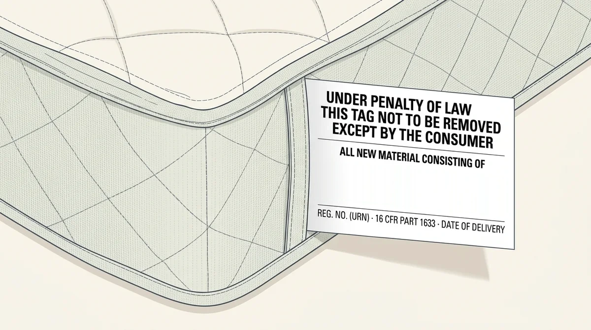

No, NapQueen mattresses aren't known to use fiberglass, though no brand-wide rule is posted online. Learn how to check your law tag and keep the cover.
Bottom Line:No, NapQueen mattresses aren't known to use fiberglass, though no brand-wide rule is posted online. You'll still want to check the sewn-in law tag when your bed arrives. Leaving the tag attached lets you check the fiber list on day one. Don't unzip or remove the outer cover on any NapQueen bed.
No NapQueen models are confirmed to have fiberglass, but the brand doesn't post a full fiberglass-free policy online. Because of that gap, you'll want to check the sewn-in law tag when your bed arrives.
Manufacturer Disclosure Check (NapQueen · Checked Nov 25, 2026)
We checked napqueensleep.com on Nov 25, 2026 and didn't find a standalone fiberglass statement online. That's a potential warning sign: a lack of openness about a basic safety fact is worth weighing strongly before you buy.
What fire barrier does NapQueen use to meet federal rules?
NapQueen uses a fiberglass-free fire barrier, though the brand doesn't list one exact fiber blend for every bed online. Beds sold in the U.S. must pass CPSC mattress flammability rules to cut fire deaths and injuries. Under 16 CFR Part 1633, makers must keep records of all flame-safe fibers or treatments used.
Federal rules also cover smoldering cigarette tests under 16 C.F.R. part 1632 and open-flame 30-minute tests under part 1633. NapQueen doesn't post its exact fire-barrier sheet online, so the sewn-in law tag is your best proof.
Do Amazon, Costco, or third-party NapQueen models differ?
Yes, third-party listings can share different details than the official NapQueen website. For example, NapQueen notes on Amazon that its Anula beds and green-tea toppers are CertiPUR-US certified for low VOCs.
On its own site, NapQueen states that the Elite Series Machka Hybrid is made in the USA. Always check the physical law tag on any third-party or clearance bed when it arrives.
What exact language appears on a NapQueen law tag?
We haven't photographed every individual NapQueen tag in-house. Under federal rule 16 C.F.R. part 1632, every mattress must have a permanent label with the month, year, and plant location.
Find the sewn-in white law tag on the side or foot of your mattress.
Leave the tag attached so you can check the fiber list on day one.
Read the exact fiber percentages and check for the letter T if a chemical treatment is listed.
Match the model code and date against NapQueen's recall page if you bought a Victoria or Maxima hybrid.

Illustrative Law-Tag Reference (NapQueen: Not a Photo of Your Exact Bed): NapQueen doesn't publish a brand-wide fiberglass rule online. Always read the sewn-in white law tag on your NapQueen bed on day one.
Brand-Specific Law-Tag Decoder: What to Look For on NapQueen
Fiberglass-Free Terms on NapQueen
100% Cotton or Wool: Natural fibers used in many fiberglass-free covers and fire barriers.
Rayon / Cellulose Fiber: Plant-based fibers often used as a safe fire sock when no glass is listed.
Watch-Out Terms on NapQueen
Glass Fiber / Fiberglass: Indicates glass threads are present inside the fire barrier.
Letter T Care Label: Shows a pad was treated with a chemical flame retardant.
Should you unzip or wash the NapQueen mattress cover?
No, don't unzip or remove the outer cover on your NapQueen mattress. Since the brand doesn't post a written fiberglass-free rule for all beds, opening the cover could expose inner fire-barrier fibers.
Use a washable mattress protector instead to keep your bed clean.
Safe to do
Leave the sewn-in law tag attached on day one.
Spot-clean small spills gently on the outer surface.
Use a removable, washable mattress protector over your bed.
Never do
Don't unzip or remove the outer NapQueen cover.
Don't machine-wash the mattress cover.
Don't tear off the white law tag before checking the fibers.
Step 1: Blot spills gently with mild soap and cold water
Dab stains lightly with a damp microfiber cloth and mild soap. Don't soak the cover or scrub down into the inner fire barrier.
Step 2: Air-dry the mattress flat without unzipping the cover
Keep the cover zipped and point a fan across the damp spot until it's dry. Washing a non-removable cover can shrink it and expose the inner sock.
Step 3: Add a breathable waterproof mattress protector
Put a washable waterproof protector over the cover on day one. It'll block sweat and spills before they ever reach the bed.
Has NapQueen had any CPSC recalls or fiberglass complaints?
The U.S. CPSC recall database shows zero recalls under RecallTitle=NapQueen, though NapQueen lists two recalls on its own site. We didn't find major federal class-action lawsuits against NapQueen, though factory addresses aren't posted online.
NapQueen lists recall programs on its own website for both the Victoria Hybrid Mattress and the Maxima 12-inch Hybrid Mattress. You should match your model code and date on that page and email support@napqueensleep.com if it's listed.
0 CPSC fiberglass recalls found.
How do you check an older or secondhand NapQueen mattress?
If you buy an older or used NapQueen bed, inspect it before you sleep on it.
Check the sewn-in white law tag for the month and year of manufacture.
Read the full fiber list on the tag and keep it attached.
Make sure the outer cover is intact and hasn't been unzipped.
Check the model code against NapQueen's recall page if it's a Victoria or Maxima hybrid.
Current models are fiberglass-free. For general fiberglass cleanup steps on older secondhand beds, see our Mattress Fiberglass Safety Hub.
Mattress fiberglass terms explained in plain English
Confused by terms like “fire sock,” “silica,” “URN,” or “CertiPUR-US” while checking your NapQueen bed? Here's what each safety term on a tag or product page actually means.
Inner fire sock (FR sock)
It's a thin, stretchy mesh sleeve wrapped tightly around the foam core under the outer cover. It slows open flames, and it can shed glass shards if you unzip or tear the cover.
Assembly zipper vs. washable cover
A zipper on the bottom usually exists for factory assembly, not washing. Don't unzip it unless the care tag clearly says the outer cover is washable.
Glass fiber and core-spun glass
These are common tag names for fiberglass. Treat glass fiber, fiberglass, glass wool, core-spun glass, and glass yarn as the same woven glass material.
Silica-treated rayon vs. fiberglass
Silica-infused rayon chars safely like ash and doesn't shed sharp glass needles. Seeing silica-treated rayon alone isn't the same as woven fiberglass.
CertiPUR-US doesn't mean fiberglass-free
CertiPUR-US only tests the inner foam for VOCs and chemicals, never the fire sock. Only finished-product GOTS or GOLS organic standards ban fiberglass socks.
6-sided encasement vs. fitted protector
A fitted protector leaves the bottom seam open. Use a 6-sided zippered waterproof encasement if you need to seal a suspect bed completely.
URN and manufacture date
The Uniform Registry Number (like CA-XXXXX) and build date identify the factory and year. You'll need that date to check older pre-transition stock.
16 CFR Part 1632 vs. 1633
Every U.S. bed must pass both federal fire tests. Part 1632 tests smoldering cigarettes, while Part 1633 tests a 30-minute open flame.
What are the best verified fiberglass-free alternatives to NapQueen?
If you want written proof of a fiberglass-free barrier, look for brands that state they use wool, thistle, or rayon-only fire socks. You can compare verified options in our Mattress Fiberglass Safety Hub or browse the cards below.
Advertising disclosure: We may earn a commission if you buy through links or product photos below. It doesn't change what we write. How we make money →
Why it's fiberglass-free: WinkBeds uses a fiberglass-free rayon fire barrier across all four firmness levels. Returns are $0 during the 365-night trial.
Best for: Shoppers who want classic coil support, four firmness choices, and zero fiberglass.
QDoes NapQueen publish a fiberglass-free guarantee online?
No, NapQueen doesn't publish a brand-wide fiberglass rule or fire-barrier sheet online. You'll want to check the sewn-in law tag when your mattress arrives.
QShould I unzip my NapQueen mattress cover to wash it?
No, you shouldn't unzip or remove the outer cover. Since fiberglass-free status isn't posted in writing for all beds, keep the cover closed.
QHas NapQueen had any CPSC mattress recalls?
A search of the U.S. CPSC recall database returned zero recalls under RecallTitle=NapQueen. However, NapQueen lists recall programs on its own site for the Victoria Hybrid and Maxima 12-inch Hybrid.
QWhere is the law tag on a NapQueen mattress?
You'll find the sewn-in white law tag on the side or foot of your mattress. Leave it attached so you can check the fiber list on day one.
QAre any NapQueen mattresses made in the USA?
Yes, NapQueen states that its Elite Series Machka Hybrid Mattress is made in the USA. Always check the sewn-in law tag on your bed to confirm the factory location and build date.
QWhat should I do if I own a Victoria or Maxima hybrid?
Inspect the sewn-in white law tag on the side or foot of your mattress. Match the model code and date against NapQueen's recall page and email support@napqueensleep.com if it's listed.
Sources, primary references & how we check
How we check facts: We checked 3 primary sources and federal CPSC recall listings on Nov 25, 2026. We don't cut beds open or run a lab. We report what makers publish and what public federal safety files say.
Nappedia Research Team
Primary-Source Fact Checking
Our research team reads official fire-barrier pages, law-tag notes, and U.S. CPSC 16 CFR Part 1633 rules directly at the source.
Shop The Best Mattresses, Pillows & Bedframes Online | NapQueen (napqueensleep.com). NapQueen lists recall programs on its official website for both the Victoria Hybrid Mattress and the. Checked Nov 25, 2026. View source →
Mattresses, Mattress Pads, & Mattress Sets | CPSC.gov (cpsc.gov). The purpose of CPSC mattress flammability standards is to reduce deaths and injuries associated with mattress. Checked Nov 25, 2026. View source →
eCFR :: 16 CFR Part 1633 -- Standard for the Flammability (Open Flame) of Mattre (ecfr.gov). 16 CFR Part 1633 requires records identifying the composition and application details of any flame retardant. Checked Nov 25, 2026. View source →
Related Fiberglass Guides
Explore more brand & model fiberglass checks
Compare fire barriers across brands or visit our main Fiberglass Safety Hub for cleanup steps.